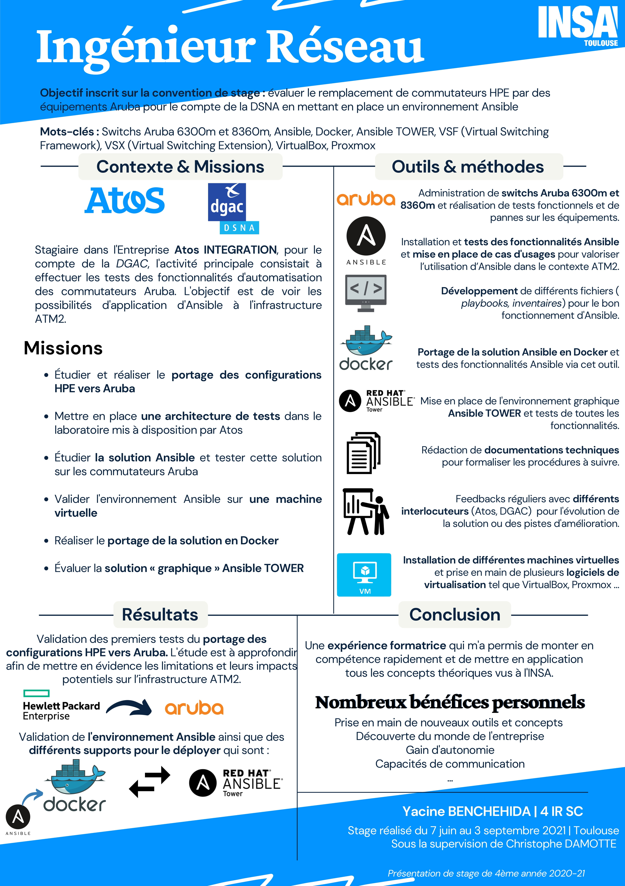

Dans cette partie du portfolio, je présenterai différentes projets et stages que j’ai réalisé ces dernières années et qui sont en lien avec le PTP ISS.
Dans un premier temps, je présenterai une vue d'ensemble des différentes expériences que j'ai pu effectué au cours de mon parcours à l'INSA Toulouse. Parmi ces expériences, je détaillerai les expériences les plus pertinentes en adéquation avec le parcours PTP ISS. L'objectif étant de présenter le contexte dans lequel j'ai pu développer mes acquis et compétences.
| Date | Durée | Contexte | Fonction(s) |
|---|---|---|---|
| Du 6 Septembre 2021 au 25 Septembre 2022 (En cours) | Contrat de professionalisation chez Atos | 12 mois | Ingénieur Réseau haute disponibilité pour le contrôle aérien qui a pour mission de :
|
| Réalisé du 7 Juin au 3 Septembre 2021 | Stage de 4ème année chez Atos | 4 mois | Ingénieur Réseau haute disponibilité pour le contrôle aérien |
| Réalisé de Septembre 2020 à Janvier 2021 | 4 mois | PROJET TRANSMISSION RADIO | INSA TOULOUSE |
|
| Réalisé de Novembre 2020 à Janvier 2021 | 3 mois | PROJET RESEAUX MOBILES | INSA TOULOUSE |
|
Le 7 juin 2021, j'ai intégré la société Atos pour un stage de 4 mois. Mon stage consistait à évaluer le remplacement de commutateurs HPE par des équipements Aruba pour le compte de la DSNA en mettant en place un environnement Ansible. Les livrables du stage étant confidentiels, je ne peux pas rentrer dans les détails des technologies utilisés. Ma description se limitera à une description générale des tâches que j’ai réalisé et aux compétences que j’ai pu développé.
Voici, un poster que j'ai réalisé pour la validation du stage de 4ème année, relatant les missions à réaliser, les objectifs à atteindre et les résultats obtenus :
Ce stage a été très enrichissant tant au niveau technique qu'au niveau humain. J'ai pu acquérir les compétences suivantes :
Ce projet s'incrivait dans la formation de 4ème année Informatique et Réseaux spécialité Systèmes Communicants. Ce projet consistait à nous approprier :
J"ai réalisé un rapport détaillé du projet retraçant les missions à réaliser, les objectifs à atteindre et les résultats obtenus.
Ce projet a été très enrichissant tant au niveau technique qu'au niveau humain. J'ai pu acquérir les compétences suivantes :
L'acquisition de ces compétences a été d'une grande aide pour le PTP ISS, notamment pour le module Communication dans l'unité de formation : Protocols for connected objects.